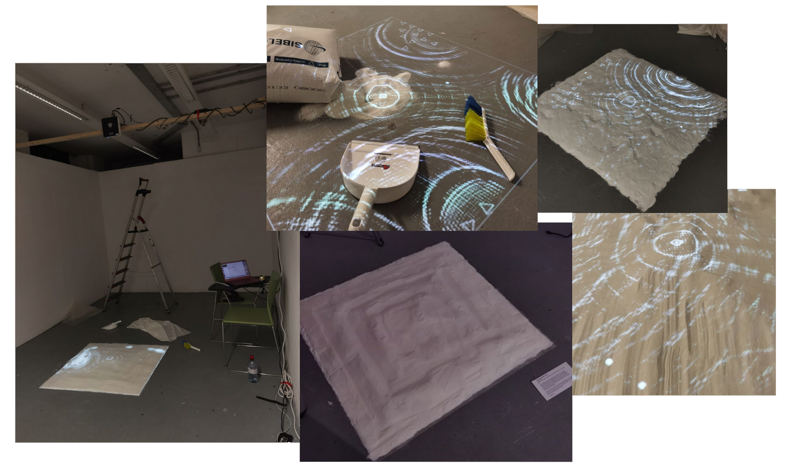

The Pool: Generation of Code
Work in progress
1m*1m, December 2023
Real-time code computation, white sand dunes with semi-transparent veils
Click here to javaScript code
After completing my first year of study, I decided to delve deeper into the self-organizing behaviors of these code creatures and their evolution over time. "Time" has begun to be recognized as a key element, influencing behaviors from morning to night, for instance. On an uneven white sand terrain, I have created a small virtual "evolution pool." These creatures inhabit a sea of pixels. In the morning, they appear smaller, move faster, and maintain more distance from each other, whereas in the evening, they grow larger, move more slowly, and seem bulkier, often clustering together.
In terms of presentation, I continue to use my consistent artistic language: I often describe my artistic domain as a pure white square canvas, its sides equal to a standard unit in any space, like 1m*1m. In my art practice, I describe it as a pixel, representing a realm of pure, clean potential that can be infinitely spliced and extended.
Technical Implementation
I began delving deeply into computer graphics algorithms, such as GLSL, and was profoundly impressed by their excellent performance, visuals, and versatile applicability. I integrated them with p5.js, and attempted to apply these to the particle system of the 'vehicles' and 'boids' I had previously created.
Now, they appear like a array of fish swimming in the water. However, I do not want it to just be a simulation of a fish tank or boids, so I am exploring how these creatures should evolve next. I might move away from using particle systems and instead study pixel-by-pixel computation algorithms like the Game of Life and reaction-diffusion, but this is still a work in progress.

When no target nearby, they spins, disturbing water ripples.
No creatures shape appear, but disturbing ripples all the time

A symmetrical rhythm, by changing the movement of targets

Final version, chaos
Installing: Sand and Fabrics projection experiments

References
Natureofcode.com. (2009). The Nature of Code. [online] Available at:
https://natureofcode.com/book/chapter-9-the-evolution-of-code/.
www.youtube.com. (n.d.). Coding Water Ripples with Shaders and
p5.js #TeamSeas. [online] Available at: https://www.youtube.com/
live/5lIl5F1hpTE?si=0R-mEj4PZSrq1NTl [Accessed 11 Dec. 2023].
www.youtube.com. (2023). How One Programmer Created Gaming’s Most Complex
Ecosystem. [online] Available at: https://www.youtube.com/watch?v=6Ji2q3WQE7
8&list=LL&index=3 [Accessed 13 Nov. 2023].
The Book of Shaders. (2015). The Book of Shaders. [online] Available at:
https://thebookofshaders.com/.
Miller, D.R. (2022). biosim4. [online] GitHub. Available at: https://github.
com/davidrmiller/biosim4.